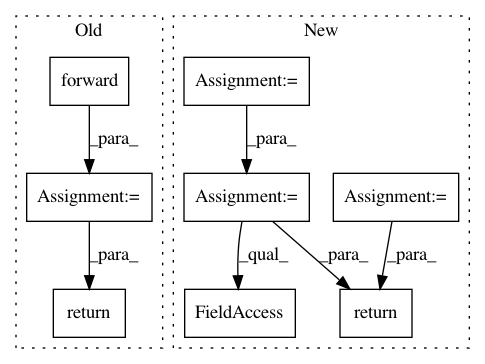

247203f29b7e841204c76d922c1ea5b2680c3663,reagent/models/seq2slate.py,DecoderPyTorch,forward,#DecoderPyTorch#Any#Any#Any#Any#,213
Before Change
// (2) True -> item should be ignored in attention
tgt_mask = tgt_tgt_mask[0, :, :] == 0
memory_mask = tgt_src_mask[0, :, :] == 0
output = super(DecoderPyTorch, self).forward(tgt, memory, tgt_mask, memory_mask)
return output.transpose(0, 1)
class MultiHeadedAttention(nn.Module):
def __init__(self, num_heads, dim_model):
After Change
tgt_embed = tgt_embed.transpose(0, 1)
memory = memory.transpose(0, 1)
output = tgt_embed
for mod in self.layers:
output = mod(
output,
memory,
tgt_mask=tgt_tgt_mask,
memory_mask=tgt_src_mask,
)
batch_size, tgt_seq_len, _ = output.shape
probs_for_placeholders = torch.zeros(
batch_size, tgt_seq_len, 2, device=output.device
)
probs = torch.cat((probs_for_placeholders, output), dim=2)
return probs
class MultiHeadedAttention(nn.Module):
def __init__(self, num_heads, dim_model):
In pattern: SUPERPATTERN
Frequency: 3
Non-data size: 8
Instances
Project Name: facebookresearch/Horizon
Commit Name: 247203f29b7e841204c76d922c1ea5b2680c3663
Time: 2020-12-08
Author: czxttkl@fb.com
File Name: reagent/models/seq2slate.py
Class Name: DecoderPyTorch
Method Name: forward
Project Name: OpenNMT/OpenNMT-py
Commit Name: 8a70c277c355fe734a01fe58baafdc2dc5164205
Time: 2016-12-29
Author: alerer@fb.com
File Name: OpenNMT/train.py
Class Name:
Method Name: eval